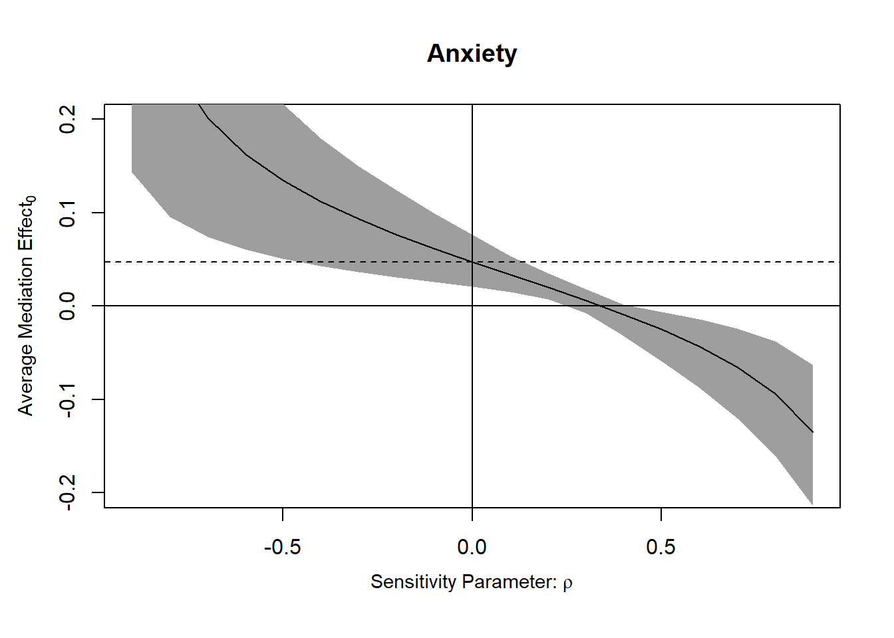
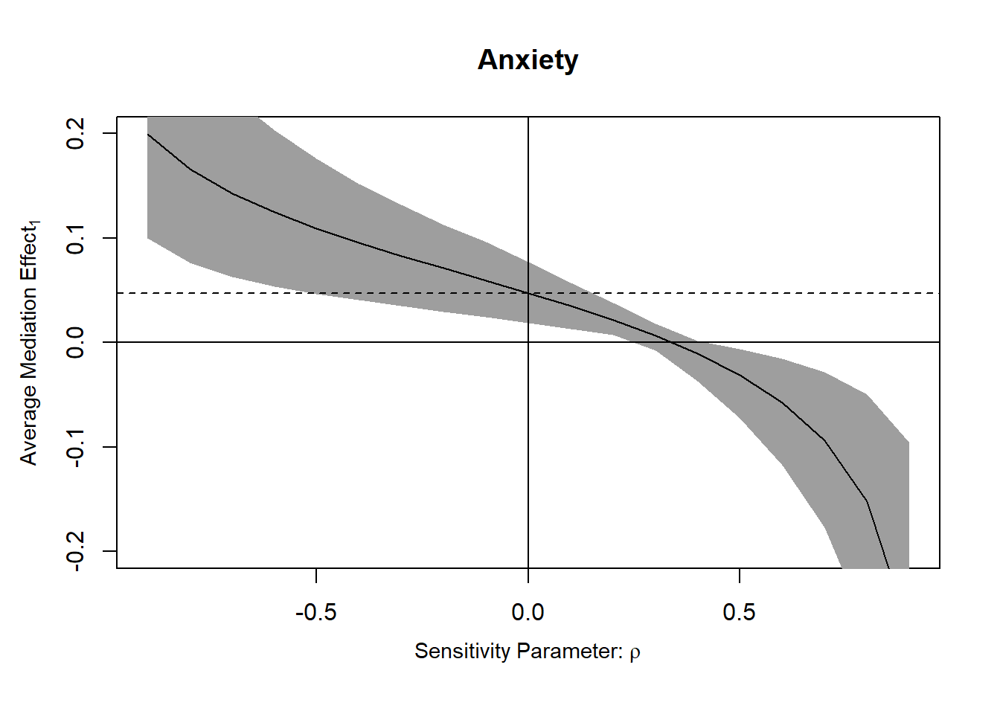

Loading required package: MASSLoading required package: MatrixLoading required package: mvtnormLoading required package: sandwichmediation: Causal Mediation Analysis
Version: 4.5.1Vilgot Huhn
August 28, 2025
Loading required package: MASSLoading required package: MatrixLoading required package: mvtnormLoading required package: sandwichmediation: Causal Mediation Analysis
Version: 4.5.1The potential outcomes method seems (?) equivalent to the causal mediation method.
It is based around fitting two models and comparing parameters. Three effects are of interest, the total effect, the direct effect, and the causal mediated effect. The parameters of interest will all be averages (Imai 2011 calls it the ATE, ADE, and ACME).
In an observational context there are four assumptions that needs to be met (conventional exogeneity assumptions) for this estimation procedure to be valid.
No exposure (X) outcome (Y) confounding.
No exposure (X) mediator (M) confounding.
No mediator (M) outcome (Y) confounding.
No exposure-mediator interaction.
No mediator-outcome confounders affected by the exposure. I don’t fully understand this one.
Randomization deals with any outside influence on the exposure X, so common causes for X&M and X&Y are dealt with. I.e. we no longer have to worry about assumption 1 and 2. I think assumption 5 should also be dealt with.
Baron & Kenny (1986, or something) has been the go-to method for estimating a mediation. The size of the mediated effect are estimated through what’s called the “product method”. Two models are fit, and three paths are estimated. First a model is fit for the exposure-mediator relationship.
\[ M_i=\beta_0+\beta_1x_i+\epsilon_i \]
So if x is a randomized treatment dummy variable (0,1) we get a prediction of how much being in the treatment group increases M, on average.
Then an additional model is fit containing both the exposure and the mediator.
\[ Y_i=\gamma_0+\gamma_1x_i+\gamma_2m_i+\epsilon_{i} \]
Here our \(\gamma_1\) is the estimate of the treatment effect (exposure) when conditioning on the mediator, and vice versa, \(\gamma_2\) is the effect of the mediator when conditioning on the exposure. \(\gamma_1\) is also referred to as \(c'\), the direct effect (the effect of X on Y that does not travel through the mediator).
To get an estimate of the indirect effect, the mediated effect, we take \(\beta_1\gamma_2\). In other words the effect of the exposure on the outcome times the conditional effect of the mediator on the outcome.
Let’s do a simulation.
#fully mediated effect
n <- 200
X <- rep(c(0,1), length.out = n)
M <- rnorm(n,X,1)
Y <- rnorm(n,M,1)
#fit first linear model
mdl.m <- lm(M ~ X)
summary(mdl.m) #beta_1 should be close to 1.
Call:
lm(formula = M ~ X)
Residuals:
Min 1Q Median 3Q Max
-2.5211 -0.6823 -0.0317 0.7281 3.3249
Coefficients:
Estimate Std. Error t value Pr(>|t|)
(Intercept) -0.08648 0.10742 -0.805 0.422
X 1.12116 0.15191 7.380 4.26e-12 ***
---
Signif. codes: 0 '***' 0.001 '**' 0.01 '*' 0.05 '.' 0.1 ' ' 1
Residual standard error: 1.074 on 198 degrees of freedom
Multiple R-squared: 0.2158, Adjusted R-squared: 0.2118
F-statistic: 54.47 on 1 and 198 DF, p-value: 4.261e-12#fit second linear model
mdl.y <- lm(Y ~ X + M)
summary(mdl.y) #conditional effect gamma_2 should be close to 1
Call:
lm(formula = Y ~ X + M)
Residuals:
Min 1Q Median 3Q Max
-2.35325 -0.80872 0.00868 0.71447 2.30013
Coefficients:
Estimate Std. Error t value Pr(>|t|)
(Intercept) -0.14745 0.10012 -1.473 0.1424
X 0.38995 0.15962 2.443 0.0154 *
M 0.97481 0.06613 14.741 <2e-16 ***
---
Signif. codes: 0 '***' 0.001 '**' 0.01 '*' 0.05 '.' 0.1 ' ' 1
Residual standard error: 0.9995 on 197 degrees of freedom
Multiple R-squared: 0.6243, Adjusted R-squared: 0.6205
F-statistic: 163.7 on 2 and 197 DF, p-value: < 2.2e-16Here the code simulates a situation where there is no direct effect. The estimate for X from mdl.y should thus be close to zero, likely non-significant. The conditional effect of M on Y when controlling for X should be close to 1. In the first model the estimate for X on M should be close to 1 too. Now let’s consider what’s happening here. Half of our datapoints are getting treatment X, those who get that treatment are 1 SD higher on M, and those who are 1 SD higher on M are also 1 SD higher on Y when controlling for X. The indirect effect here can be estimated by taking the product, but it could also be indirectly estimated by taking the difference between the total effect, lm(Y ~ X), and the direct effect. Often that contrast/difference is our estimand.
Let’s consider the product method with less strong effects.
n <- 2000
X <- rep(c(0,1), length.out = n)
beta_1 <- 0.4
M <- rnorm(n, beta_1*X ,1)
gamma_2 <- 0.5
Y <- rnorm(n, gamma_2*M, 1)
#fit first linear model
mdl.m <- lm(M ~ X)
summary(mdl.m) #beta_1 should be close to 1.
Call:
lm(formula = M ~ X)
Residuals:
Min 1Q Median 3Q Max
-2.9668 -0.6786 0.0033 0.6697 3.9215
Coefficients:
Estimate Std. Error t value Pr(>|t|)
(Intercept) 0.03296 0.03158 1.044 0.297
X 0.36543 0.04466 8.183 4.88e-16 ***
---
Signif. codes: 0 '***' 0.001 '**' 0.01 '*' 0.05 '.' 0.1 ' ' 1
Residual standard error: 0.9986 on 1998 degrees of freedom
Multiple R-squared: 0.03243, Adjusted R-squared: 0.03194
F-statistic: 66.96 on 1 and 1998 DF, p-value: 4.884e-16
Call:
lm(formula = Y ~ X + M)
Residuals:
Min 1Q Median 3Q Max
-3.8768 -0.6893 -0.0014 0.6609 3.7945
Coefficients:
Estimate Std. Error t value Pr(>|t|)
(Intercept) -0.03946 0.03241 -1.218 0.223
X 0.04927 0.04658 1.058 0.290
M 0.50378 0.02295 21.949 <2e-16 ***
---
Signif. codes: 0 '***' 0.001 '**' 0.01 '*' 0.05 '.' 0.1 ' ' 1
Residual standard error: 1.024 on 1997 degrees of freedom
Multiple R-squared: 0.2027, Adjusted R-squared: 0.2019
F-statistic: 253.9 on 2 and 1997 DF, p-value: < 2.2e-16 X
0.1840973 Getting the treatment now increases the mediator M by 0.4, on average. The mediator then affects the outcome by 0.5 per unit, controlling for an eventual direct treatment effect (that we don’t have in the data generating process). Thus the indirect effect is 0.5 times 0.4 ~= 0.2.
The potential outcomes approach is instead based on counterfactuals. I find this quite conceptually confusing, but the gist of it is that the framework asks us to imagine we could time-travel and, for each individual, see what would have happened if we had switched the randomization (or set their mediator to a specified level). The confusing part is that this is impossible, but perhaps it’s valuable to remember that this is indeed what we wish we could do.1
Imai et al (2011) introduces a notation for potential outcomes that may be useful. \(Y_i(1)\) is the “potential” outcome if a patient \(i\) receives a treatment (if it’s dummy coded) and \(Y_i(0)\) is the potential outcome if they didn’t. Truly “causal” effects then are given by the contrast at the “unit level” \(Y_i(1)-Y_i(0)\). This can never really be known without time-travel, but supposedly there’s something gained by remembering that really, this is the question we’re actually interested in. With randomization an Average Treatment Effect (ATE) can be estimated since the probability of receiving the treatment is independent of the outcome \(\{ Y_i(1),Y_i(0) \} \perp T_i\).
An even more clear notation could probably be \(Y_i(t=0,m=0)\)? But I don’t make the rules (I think there are alternative notation styles though).
However when there’s no randomization we have to settle on the goal that the level of the exposure/treatment is “as if” randomized if we control for the right pre-treatment covariates. This is the first assumption of the sequential ignorability assumption. “treatment assignment is assumed to be ignorable”, also called exogeneity assumption, no omitted variable bias. The second assumption is more tricky. Even if we were to randomize the mediator, this would not satisfy sequential ignorability. It is sequential because “once” we’ve conditioned on a set of covariates, that renders the treatment/exposure ignorable, “as if randomized”, the mediator is ignorable (statistically independent of potential outcomes).
The mathy way to express the sequential ignorability assumption is:
\[ \{ Y_i(t',m),M_i(t) \} \perp T_i |X_i=x \\ Y_i(t',m) \perp M_i(t) | T_i = t, X_i=x \]
Imai actually doesn’t explain in the paper what prim means here, but Claude suggested it was the counterfactual. Thus, reading it out we have line one: Let’s we have an individual who recieved treatment t, \(T_i=t\) ,then \(t'\) is their counter factual. The individual’s outcome on Y given the treatment they didn’t receive and the mediator, together with the individual outcome on the mediator for the treatment they actually did recieve, are assumed to both be “jointly” independent of the treatment, given we control for the right covariates. A confusing part here is the mediator level \(m\). This does not refer to the outcome on the mediator given a treatment, that’s \(M_i(t)\), instead it’s an arbitrary mediator level, not necessarily the one that would result from treatment.2 In other words we imagine we could manipulate both the treatment and the mediator. \(m'\) is then just another arbitrary mediator level.
In addition to this, the potential outcome should also be independent of the potential mediator value, given the treatment and these super nice well chosen covariates.
I guess…
The implication of this where I managed to follow along with is that even if we could somehow randomize both the treatment and the mediator, what we’re actually after is the conditional effect. I.e. the mediated effect should not be mixed up with the effect of the mediator.
Anyway, the best thing we can do for observational data, including randomized experiments, is to address confounding with sensitivity analysis. Se code below from https://imai.fas.harvard.edu/research/files/mediationR2.pdf
The tricky thing to interpret is the sensitivity parameter \(\rho\) which describes the correlation between the error terms of the two models being compared. In other words, it seems like it’s a measure of total confounding. In a randomized scenario where the only3 possible source of “residual confounding” is mediator-outcome confounding4, it could probably be interpreted as that (right?). In an observational context it’s harder to interpret. Full quote in footnote5
Code:
cond anx age educ gender income emo
1 3 a little anxious 45 high school male 13 7
2 4 somewhat anxious 73 bachelor's degree or higher male 16 6
3 2 a little anxious 53 some college female 3 8
4 1 not anxious at all 45 high school male 14 9
5 3 somewhat anxious 55 some college female 12 5
6 1 a little anxious 85 high school female 3 5
p_harm tone eth treat english immigr anti_info cong_mesg
1 6 0 1 0 Oppose 4 0 1
2 3 0 0 0 Favor 3 0 0
3 7 1 0 0 Strongly Oppose 3 0 0
4 8 1 1 1 Strongly Oppose 4 0 1
5 5 0 1 0 Strongly Oppose 2 0 0
6 6 1 1 1 Strongly Oppose 4 0 0#first fitting a model to predict the proposed mediator, anxiety (emo), controlling for a bunch of pre-treatment covariates
med.fit <- lm(emo ~ treat + age + educ + gender + income, data = framing)
#then fitting a model to predict the outcome, agreeing to send a message to a congresseman about immigration, controlling for same covariates
out.fit <- glm(cong_mesg ~ emo + treat + age + educ + gender + income, data = framing, family = binomial("probit"))
#then we use the function mediation::mediate, specifying both treatment variable (dummy?) and mediator.
med.out <- mediate(med.fit, out.fit, treat = "treat", mediator = "emo", robustSE = TRUE, sims = 1000)
summary(med.out)
Causal Mediation Analysis
Quasi-Bayesian Confidence Intervals
Estimate 95% CI Lower 95% CI Upper p-value
ACME (control) 0.081611 0.034323 0.140369 <2e-16 ***
ACME (treated) 0.082094 0.035396 0.139179 <2e-16 ***
ADE (control) 0.013470 -0.097988 0.134226 0.858
ADE (treated) 0.013953 -0.107508 0.142072 0.858
Total Effect 0.095564 -0.031502 0.233847 0.148
Prop. Mediated (control) 0.766724 -5.091557 6.889030 0.148
Prop. Mediated (treated) 0.787056 -4.559368 6.197541 0.148
ACME (average) 0.081852 0.035143 0.139569 <2e-16 ***
ADE (average) 0.013712 -0.101688 0.137794 0.858
Prop. Mediated (average) 0.776890 -4.825463 6.543285 0.148
---
Signif. codes: 0 '***' 0.001 '**' 0.01 '*' 0.05 '.' 0.1 ' ' 1
Sample Size Used: 265
Simulations: 1000 #we can also allow for mediator-treatment interaction.
out.fit <- glm(cong_mesg ~ emo * treat + age + educ + gender + income, data = framing, family = binomial("probit"))
med.out <- mediate(med.fit, out.fit, treat = "treat", mediator = "emo", robustSE = TRUE, sims = 1000)
summary(med.out)
Causal Mediation Analysis
Quasi-Bayesian Confidence Intervals
Estimate 95% CI Lower 95% CI Upper p-value
ACME (control) 0.0762680 0.0285312 0.1305690 <2e-16 ***
ACME (treated) 0.0983708 0.0362500 0.1760860 <2e-16 ***
ADE (control) -0.0052030 -0.1245914 0.1052578 0.932
ADE (treated) 0.0168997 -0.1198561 0.1423289 0.812
Total Effect 0.0931678 -0.0454880 0.2299640 0.196
Prop. Mediated (control) 0.6766312 -6.4231779 5.6117670 0.196
Prop. Mediated (treated) 0.8955596 -6.0687881 7.1155606 0.196
ACME (average) 0.0873194 0.0354259 0.1467197 <2e-16 ***
ADE (average) 0.0058484 -0.1170197 0.1196646 0.898
Prop. Mediated (average) 0.7860954 -6.6267417 6.2875314 0.196
---
Signif. codes: 0 '***' 0.001 '**' 0.01 '*' 0.05 '.' 0.1 ' ' 1
Sample Size Used: 265
Simulations: 1000
Test of ACME(1) - ACME(0) = 0
data: estimates from med.out
ACME(1) - ACME(0) = 0.022103, p-value = 0.35
alternative hypothesis: true ACME(1) - ACME(0) is not equal to 0
95 percent confidence interval:
-0.02309668 0.07689059#section 3.2. describes moderated mediation, let's put a pin in that.
#code for sensitivity analysis.
#First let's switch back to the simple model without interaction
out.fit <- glm(cong_mesg ~ emo + treat + age + educ + gender + income, data = framing, family = binomial("probit"))
med.out <- mediate(med.fit, out.fit, treat = "treat", mediator = "emo", robustSE = TRUE, sims = 1000)
sens.out <- medsens(med.out, rho.by=0.1, effect.type = "indirect", sims = 100)Warning in rho^2 * (1 - r.sq.m) * (1 - r.sq.y): Recycling array of length 1 in vector-array arithmetic is deprecated.
Use c() or as.vector() instead.Warning in err.cr.d^2 * (1 - r.sq.m) * (1 - r.sq.y): Recycling array of length 1 in vector-array arithmetic is deprecated.
Use c() or as.vector() instead.
Mediation Sensitivity Analysis: Average Mediation Effect
Sensitivity Region: ACME for Control Group
Rho ACME(control) 95% CI Lower 95% CI Upper R^2_M*R^2_Y* R^2_M~R^2_Y~
[1,] 0.3 0.0059 -0.0073 0.0180 0.09 0.0493
[2,] 0.4 -0.0088 -0.0320 0.0018 0.16 0.0877
Rho at which ACME for Control Group = 0: 0.3
R^2_M*R^2_Y* at which ACME for Control Group = 0: 0.09
R^2_M~R^2_Y~ at which ACME for Control Group = 0: 0.0493
Sensitivity Region: ACME for Treatment Group
Rho ACME(treated) 95% CI Lower 95% CI Upper R^2_M*R^2_Y* R^2_M~R^2_Y~
[1,] 0.3 0.0065 -0.0078 0.0178 0.09 0.0493
[2,] 0.4 -0.0105 -0.0368 0.0018 0.16 0.0877
Rho at which ACME for Treatment Group = 0: 0.3
R^2_M*R^2_Y* at which ACME for Treatment Group = 0: 0.09
R^2_M~R^2_Y~ at which ACME for Treatment Group = 0: 0.0493 #we can then plot the sensitivity analysis
plot(sens.out, sens.par = "rho", main = "Anxiety", ylim = c(-0.2, 0.2))

On the other hand it is also valuable to remember you can never go back. No matter how much your heart breaks. You can never go back.↩︎
Even with the powers of time travel fully picking apart the potential outcomes framework is difficult.↩︎
“only”↩︎
I may be wrong about this and \(\rho\) actually specifically relates to mediator-outcome confounding even in non randomized contexts, I’m not sure.↩︎
“Here, we focus on the outcomewhere subjects stated whether immigration shouldbe decreased or increased. The results are presented in Figure 2, which is generated using the mediation software. In the left panel, the true ACME is plotted against values of the sensitivity parameter ρ, which equals the correlation between the error terms in the mediator and outcome models and thus represents both the degree and direction of the unobserved confounding factor between anxiety and immigration preference. When ρ is zero, sequential ignorability holds and the true ACME coincides with the estimate reported in Table 2. The shaded region in the plot marks the 95% confidence intervals for each value of ρ.”↩︎